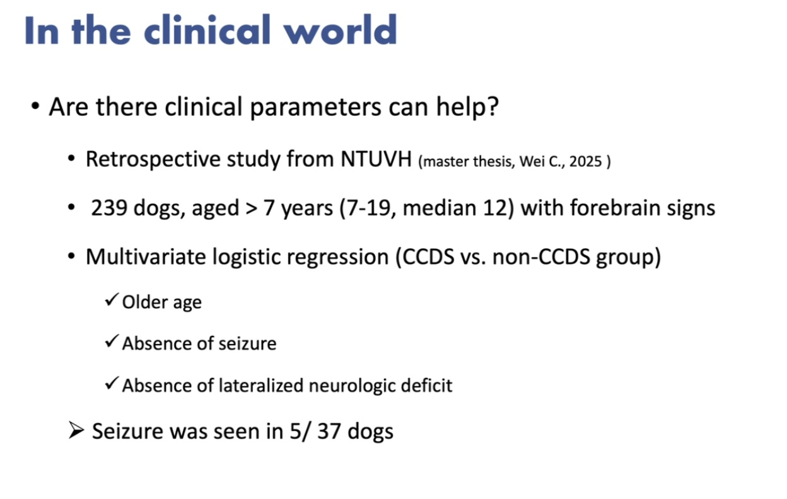
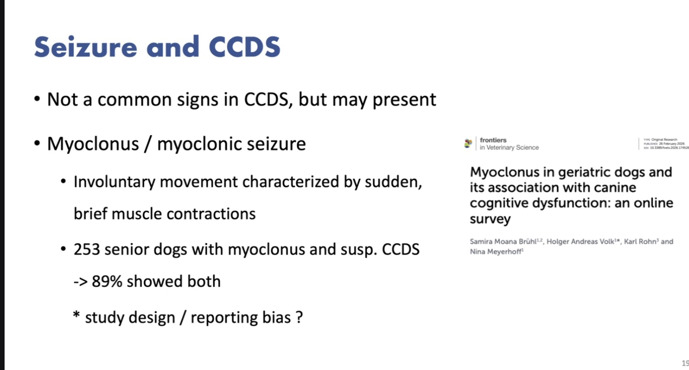

犬認知功能障礙症候群（CCDS）
Canine Cognitive Dysfunction Syndrome｜講者：（待補）
2026 年 11 月 19 日｜聯盟獸醫教育中心 卓越講堂
資料來源標記：
📸 現場 課堂投影片截圖
💡 補充 整理者補充（教科書知識，非講者內容）
現場整理中：目前只有第 18–19 張投影片截圖，之後收到的投影片和錄音會再補進來。
現場整理中：目前只有第 18–19 張投影片截圖，之後收到的投影片和錄音會再補進來。
⭐ 本場重點（整理中）
- 台大動物醫院回溯研究：239 隻 >7 歲、有前腦症狀的犬，多變項分析中支持 CCDS 的獨立因子是年紀較大、沒有癲癇、沒有偏側性神經缺損
- CCDS 犬仍有 5/37（約 13.5%）出現癲癇 → 癲癇不能直接排除 CCDS
- 癲癇不是 CCDS 的常見症狀，但可能出現；要特別注意肌陣攣（myoclonus）／肌陣攣型發作
- Brühl 等 2026 線上問卷：253 隻有肌陣攣且疑似 CCDS 的老犬，89% 兩者兼具，但講者提醒要考慮研究設計與報告偏差
場次資訊
▾- 主題：犬認知功能障礙症候群（CCDS）（暫定標題，依投影片內容命名；正式標題待補）。
- 講者：待補。
- 形式：聯盟獸醫教育中心 卓越講堂（2026-11-19）。
1. 臨床上哪些參數能幫忙？（台大回溯研究）
▾
7 years (7-19, median 12) with forebrain signs；Multivariate logistic regression (CCDS vs non-CCDS group)：Older age、Absence of seizure、Absence of lateralized neurologic deficit；Seizure was seen in 5/37 dogs" loading="lazy">| 📸 投影片 | 中文 |
|---|---|
| Are there clinical parameters can help? | 有沒有臨床參數能幫忙區分 CCDS？ |
| Retrospective study from NTUVH (master thesis, Wei C., 2025) | 台大動物醫院回溯性研究（Wei C. 2025 碩士論文） |
| 239 dogs, aged > 7 years (7–19, median 12) with forebrain signs | 239 隻 7 歲以上（7–19 歲，中位數 12 歲）有前腦症狀的犬 |
| Multivariate logistic regression (CCDS vs. non-CCDS group) | 多變項邏輯斯迴歸，比較 CCDS 組與非 CCDS 組 |
| ✓ Older age | 年紀較大 |
| ✓ Absence of seizure | 沒有癲癇 |
| ✓ Absence of lateralized neurologic deficit | 沒有偏側性神經缺損 |
| ➢ Seizure was seen in 5/37 dogs | （CCDS 組）37 隻中 5 隻有癲癇 |
💡 怎麼解讀：
- 5/37 ≈ 13.5%；從數字推測 239 隻中約 37 隻歸為 CCDS，其餘是非 CCDS（多為腦腫瘤、腦血管病、腦炎等結構性或其他前腦疾病）。
- CCDS 是排除性診斷。老犬有前腦症狀，如果有癲癇或偏側性缺損（單側本體感覺缺損、單側威脅反射消失、往同一側轉圈），要優先懷疑結構性病灶，建議 MRI，不要直接歸因於老化失智。
- 三個因子都是「支持 CCDS」的方向，但有癲癇不等於排除 CCDS。
2. 癲癇與 CCDS：肌陣攣
▾
89% showed both；study design / reporting bias?；右側為 Frontiers in Veterinary Science 論文 Myoclonus in geriatric dogs and its association with canine cognitive dysfunction: an online survey（Brühl, Volk, Rohn, Meyerhoff）" loading="lazy">| 📸 投影片 | 中文 |
|---|---|
| Not a common sign in CCDS, but may present | 癲癇不是 CCDS 的常見症狀，但可能出現 |
| Myoclonus / myoclonic seizure | 肌陣攣／肌陣攣型發作 |
| Involuntary movement characterized by sudden, brief muscle contractions | 不自主運動：突然、短暫的肌肉收縮 |
| 253 senior dogs with myoclonus and susp. CCDS → 89% showed both | 253 隻有肌陣攣且疑似 CCDS 的老犬 → 89% 兩者兼具 |
| * study design / reporting bias? | 研究設計／報告偏差？ |
引用論文：Brühl SM, Volk HA, Rohn K, Meyerhoff N. Myoclonus in geriatric dogs and its association with canine cognitive dysfunction: an online survey. Front Vet Sci, 2026（投影片顯示 2026 年 2 月出版）。
💡 為什麼要小心這個 89%：
- 線上問卷、飼主自願填寫：狗有這些問題的飼主比較會來填（選擇偏差）。
- 肌陣攣與 CCDS 多由飼主回報，不是獸醫或 MRI／EEG 確認，容易把顫抖、睡眠中抽動等誤認為肌陣攣（報告偏差）。
- 收案對象本身就偏向兩者兼具，所以 89% 不能解讀為盛行率，只能說兩者可能有關聯。
- 人類阿茲海默症也有肌陣攣與癲癇風險上升的現象，生物學上說得通，但目前犬的證據等級仍低。
課堂內容（整理中）
▾其他投影片與錄音整理中，收到後補入。